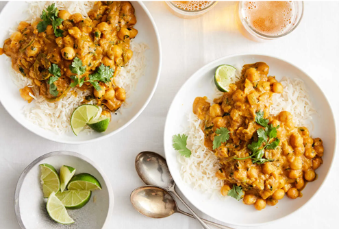

Canned pumpkin purée and coconut milk, heavily seasoned with curry spices and lots of fresh lime juice, make a sweet-sharp sauce for chickpeas. It’s a rich, creamy curry that you can eat on its own, or serve over rice or couscous. If you want to incorporate more vegetables, stir in some spinach, baby kale or sliced green beans during the last few minutes of cooking, letting them soften in the sauce.
Photo by: Ryan Liebe for The New York Times. Food Stylist: Barrett Washburne.
Heat oil in a large skillet over medium-high heat. Stir in onion, jalapeño and bay leaf. Cook, stirring occasionally, until onion is golden on the edges, about 8 minutes.
Add ginger and garlic and cook until fragrant, about 2 minutes, stirring frequently. Stir in garam masala, cumin and turmeric; cook for an additional 30 seconds.
Stir in chickpeas, coconut milk, pumpkin, ½ cup water and 1½ teaspoons salt. Bring to a simmer and continue to simmer for 10 minutes, stirring occasionally, to let the flavors meld. (Add more water if it starts to look too thick.) Stir in cilantro and lime juice to taste. Taste and add more salt if necessary.
Serve over rice or couscous if you like, and top with more cilantro and lime wedges on the side.